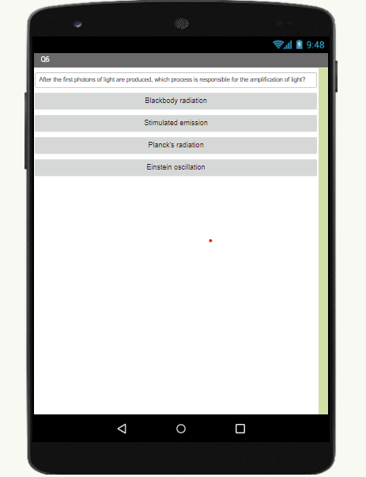

This page is to display the projects I have made in AP Computer Principles
A game I have made in Scratch. An astronaut dog is accidentally released into space, and he must fly back to his spaceship! Use the arrow keys to control where Spot flies, and make sure he dodges all of the space debris!! Give it a try :)
A Trivia game made in MIT App Inventor. This game is a fun way to test your general knowledge about Trivia. The pictures below show the Starting Screen and one of the Questions as well. Play our fun game and see if you can get 100%!!!!
This is an interactive fiction story created in Python. Your ship sinks in the middle of the ocean. See if you can make it safely back to land by making 7 correct decisions!!
I created a pie chart using matplotlib which shows the top ten most popular newborn girl names in California in the year 1960. The data was gathered from the US Social Security Administration, which has been publishing the top 1000 newborn names for each sex since 1960.